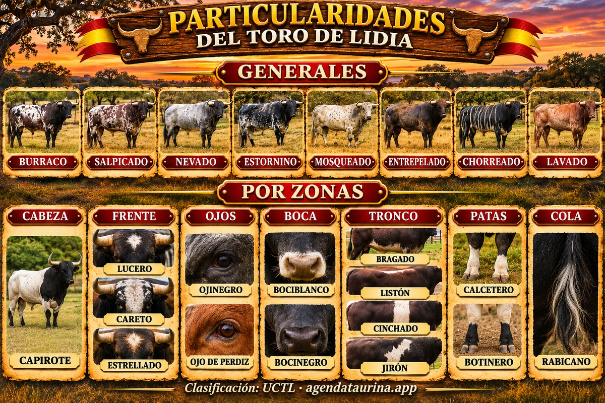

Agenda Taurina
Agenda TaurinaParticularidades del toro de lidia: lucero, bragado, burraco y todas las señales según la UCTL
Las manchas y marcas que completan la reseña de un toro, explicadas una a una

Ilustración de Agenda Taurina generada con IA · Clasificación: UCTL.
Cuando un cartel dice que un toro es «negro bragado meano» o «cárdeno lucero», la primera palabra es la capa y las siguientes son sus particularidades: las manchas, señales y dibujos que hacen que cada toro sea distinto a los demás. Si todavía no conoces las capas, empieza por nuestra guía de capas o pelajes del toro de lidia.
Qué son las particularidades
Las particularidades son las marcas que se añaden a la capa para describir a un toro con precisión. Junto al nombre, el número, el guarismo y la ganadería, permiten identificar a cada animal sin confusión. La Unión de Criadores de Toros de Lidia (UCTL) las divide en dos grupos:
- Generales: afectan a gran parte del cuerpo y cambian el aspecto de toda la capa.
- Complementarias o accidentales: aparecen en una zona concreta: la cabeza, la cara, los ojos, la boca, el tronco, las patas o la cola.
Particularidades generales
- Burraco: toro negro con muchas manchas blancas pequeñas repartidas por el cuerpo.
- Salpicado: capa oscura con manchas blancas irregulares, como salpicaduras, sobre todo en costados y ancas.
- Nevado: pintitas blancas pequeñas sobre una capa oscura, como copos de nieve.
- Estornino: negro con unas pocas manchitas blancas pequeñas y redondas, como el plumaje del estornino.
- Mosqueado: lo contrario del nevado: capa clara con pequeñas manchas oscuras, como moscas.
- Armiñado: capa clara salpicada de pequeñas pintas oscuras, que recuerda a la piel del armiño.
- Alunarado: manchas grandes y redondeadas, como lunares, de color distinto a la capa.
- Remendado: manchas grandes e irregulares de otro color, como remiendos.
- Aparejado: berrendo con una gran mancha de color que cubre el lomo y parte de los costados, como si llevara un aparejo.
- Carbonero: pelaje grisáceo y oscuro, como tiznado de carbón.
- Entrepelado: pelos blancos sueltos repartidos por una capa oscura, como canas.
- Chorreado: franjas verticales que bajan del lomo hacia el vientre, de un tono distinto al de la capa. La UCTL distingue el chorreado en morcillo y el chorreado en verdugo, según el tono de esas franjas.
- Anteado: tono amarillento pálido, como la piel de ante.
- Lavado: capa que parece desteñida, con zonas más claras de lo normal, sobre todo en toros colorados.
Particularidades por zonas
Cabeza y cuello
- Capirote: la cabeza y el cuello son de un color distinto al resto del cuerpo, como si llevara una capucha.
- Gargantillo: mancha blanca en el cuello, como un collar.
Frente y cara
- Lucero: mancha blanca en la frente. Es una de las particularidades más conocidas.
- Estrellado: mancha blanca pequeña e irregular en la frente, más pequeña que el lucero.
- Careto: mancha blanca que ocupa la frente y gran parte de la cara.
- Caribello: pelos blancos sueltos por la frente y la cara, sin llegar a formar una mancha.
- Facado: franja de pelo blanco en la cara.
Ojos
- Ojinegro: los ojos rodeados de pelo negro, sobre una capa más clara.
- Ojo de perdiz: en toros colorados, un aro de pelo más rojizo o encendido alrededor del ojo.
- Ojalado: aro de color distinto alrededor de los ojos.
- Llorón: mancha bajo los ojos, como si el toro llorara.
Boca
- Bociblanco: el morro blanco.
- Bocinegro: el morro negro, en toros de capa clara.
- Bocidorado: el morro de tono dorado o rojizo.
Tronco
- Bragado: mancha blanca en el vientre, entre las patas.
- Meano: mancha blanca en la zona del prepucio.
- Aldiblanco: la parte baja del cuerpo (la falda) blanca.
- Aldinegro: la parte baja del cuerpo negra, en toros de capa clara.
- Axiblanco: manchas blancas en las axilas.
- Albardado: el lomo de un color distinto, como si llevara una albarda.
- Lombardo: toro oscuro con el lomo más claro, tirando a pardo.
- Listón: franja estrecha de otro color a lo largo de la columna, de la cruz a la cola.
- Cinchado: banda blanca que rodea el tronco, como la cincha de un caballo.
- Jirón (o girón): mancha blanca grande e irregular en el costado.
Patas
- Calcetero: la parte baja de las patas blanca, como si llevara calcetines.
- Botinero: lo contrario: toro de capa clara con la parte baja de las patas oscura, como unas botas.
- Calzón: mancha blanca en la parte trasera, de las ancas a los muslos, como unos calzones.
Cola
- Rabicano: cola oscura con pelos blancos sueltos.
- Coletero: con pelo blanco en la cola, sobre todo en la punta (el borlón).
Ejemplos de reseñas completas
En la reseña se escribe primero la capa y después las particularidades, normalmente de las generales a las de zonas concretas:
- Negro bragado meano: toro negro con una mancha blanca en el vientre y otra en la zona del prepucio.
- Cárdeno claro lucero: toro gris plateado con una mancha blanca en la frente.
- Colorado ojo de perdiz: toro rojo con un aro más encendido alrededor de los ojos.
- Negro burraco calcetero: toro negro con muchas manchas blancas pequeñas y las patas blancas por abajo.
- Berrendo en negro capirote: fondo blanco con manchas negras y la cabeza y el cuello negros.
Ahora que conoces capas y particularidades, ya puedes leer la reseña de cualquier toro. Si quieres saber más sobre los toros que salen por primera vez a la calle, mira nuestra guía qué es un toro cerril, y para otras palabras de los carteles, el glosario de los festejos populares.
Fuente: clasificación de particularidades de la Unión de Criadores de Toros de Lidia (UCTL), explicada por Agenda Taurina.
Ver el calendario completo Ver todas las noticias